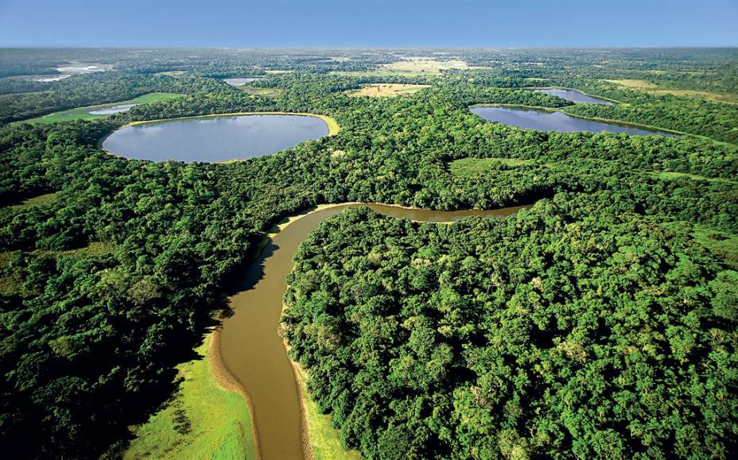

Mato Grosso do Sul é um estado do Centro-Oeste brasileiro, composto por 79 municípios e com uma população estimada de 2.901.895 habitantes em 2024, conforme atualização do IBGE . Sua economia é fortemente baseada na agropecuária, destacando-se na produção de grãos e pecuária. O atual governador é Eduardo Riedel .
